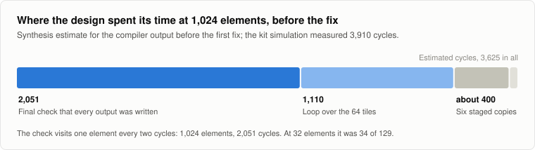
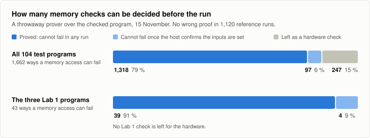

Making the compiler's
hardware fast
We measured where the compiled design loses its cycles, put the first fix into the compiler, and showed with a prototype that the rest of the gap can be closed.
Last time I showed the first run on the FPGA: Lab 1 compiled from Python Spatial was correct but took about four times as many cycles as the staff's handwritten HLS. You asked about efficiency. This week was about that.
Three things happened. We measured where the cycles go, at larger sizes too, and the gap is worse than it looked. We put the first fix into the real compiler, under the full review routine, and measured it. And a throwaway prototype of the code generator reaches the staff's speed at every size we tried, which tells us the remaining gap is closable and what it takes. I'll also show a bug we found in the course's own wrapper along the way.
The gap grows with the array
Lab 1's tiled scale in the F2 kit simulation, the step students run, beside the staff's handwritten HLS.

| Elements | Staff's HLS | Compiler output | Times as many |
|---|---|---|---|
| 32 | 77 | 294 | 3.8 |
| 256 | 109 | 1,198 | 11.0 |
| 1,024 | 158 | 3,910 | 24.7 |
- About 3.6 cycles for each extra element. The staff's design adds 1 to 2 cycles for each extra block of 16.
- One size hid it. Last week's comparison used 32 elements.
This is the same Lab 1 program at 32, 256 and 1,024 elements, in the kit's simulation, the make hw_sim step students run. Orange is the staff's handwritten HLS. Blue is what our compiler generated before this week. Both axes are logarithmic.
At 32 elements we were 3.8 times slower. At 1,024 we were almost 25 times slower. Our design cost about three and a half cycles per extra element; theirs costs one or two per extra block of sixteen. So the single size we measured last week understated the problem, and we now measure at three sizes as a rule. The green lines are the compiler prototypes I'll come to.
Memory traffic and one check, not arithmetic
Thirty-two multiplications take about 7 cycles. The rest is how the design talks to memory and how it checks itself.

- Six separate memory transfers where the staff's design makes two, overlapped. Each costs about 27 cycles of waiting.
- A check that every output was written, one element every two cycles.
| Version | Cycles |
|---|---|
| Compiler output before this week | 294 |
| The final check written so it can run in parallel | 257 |
| and no flags fetched for inputs the host says are fully set | 168 |
| and nothing copied that the run cannot change | 89 |
| and one pipelined loop that reads, multiplies and writes | 75 |
| Staff's handwritten HLS | 77 |
Where does the time go? Not arithmetic. Both designs multiply sixteen numbers at once, and the multiplications take about seven cycles.
The bar is our design at 1,024 elements. More than half is one check: at the end the kernel confirms every output element was written, one element every two cycles. The next part is the loop over tiles, and then six staged copies in and out of memory, where the staff's design makes two transfers that overlap.
On the right we changed the generated design by hand, one cause at a time, at 32 elements. Writing the final check so the tool can evaluate it in parallel: 294 to 257. Not fetching flags for inputs the host says are fully set: 168. Not copying what the run can't change: 89. And one pipelined loop: 75, level with the staff's 77. So three causes: memory round trips, a check whose cost grows with the data, and nothing proved before the run.
The first fix is in the compiler
The "was every output written?" check now rides in a copy loop the hardware already runs, sixteen flags at a time. Every result is exactly as before.
| Elements | Before | With the fix | Staff's HLS |
|---|---|---|---|
| 32 | 294 | 260 | 77 |
| 256 | 1,198 | 692 | 109 |
| 1,024 | 3,910 | 1,858 | 158 |
- Same answers. The generated hardware code, built on the Mac, matches both reference simulators on 116 hand-specified inputs.
- Written apart, agreed at once. Tests and code came from the plan separately and matched at the first merge.
- 40 of 42 planted bugs caught. The other two cannot change any result.
- Two fresh test sets written after the code was frozen; 2,640 automated tests pass.
This is the one that is real. As of last night the compiler itself generates this, merged after the full routine.
The change: the kernel no longer has a loop that checks, one element per trip, whether every output was written. The wrapper already runs a loop that copies the "written" flags back to memory, sixteen at a time, so the check now rides in that loop. The program's results are exactly what they were, including which fault is reported.
The numbers in blue were measured last night on the real compiler's output, in the kit simulation: 260, 692 and 1,858 cycles, where the old output took 294, 1,198 and 3,910. They equal the prototype's numbers exactly, and at 1,024 elements that is a little over twice as fast.
How do we know it's right? The generated hardware code, compiled on the Mac, gives the same results as both reference simulators on 116 inputs whose expected results were specified by hand. The tests and the code were written by separate authors from the plan and agreed the first time they met. Reviewers planted 42 bugs; 40 are caught and the other two can't change a result. And two fresh test sets were written after the code was frozen.
We did this one first because it needs nothing new: no proof, no change to the interface with the host. It is still far from the staff's 158.
A compiler prototype reaches the staff's speed
The code generator emits each faster design itself once it is told facts about the program. The facts came from a table, not yet from the compiler.
| What the compiler emits | What it must know first | 32 | 256 | 1,024 |
|---|---|---|---|---|
| Before this week | 294 | 1,198 | 3,910 | |
| First fix in the compiler | nothing | 260 | 692 | 1,858 |
| Checks proved away, no transfer the run cannot observe prototype | no check can fail; every output is written; the inputs are fully set | 87 | 147 | 289 |
| One fused, pipelined loop prototype | the same, and each tile is a whole number of memory beats | 75 | 108 | 155 |
| Staff's handwritten HLS | 77 | 109 | 158 |
- Limits. One program; simulation only; and one intermediate design never finished at the larger sizes, unexplained, so nothing planned generates it.
The hand edits show what is possible; the compiler has to produce them. So we built a throwaway prototype of the code generator that emits each faster design itself, at any of the three sizes, when it is handed facts about the program.
The second row is the fix that is now real. The third row removes the checks and the transfers the run can't observe; it needs to know that no check can fail, that every output is written, and that the host has set the inputs. That gets within a factor of two. The fourth row fuses the load, the loop and the store into one pipelined loop, and that matches the staff's design at every size: 75, 108, 155 against 77, 109, 158.
Three honest limits. It is one program. The facts were given to the prototype in a table; proving them is the next slide. And these are simulation numbers. Also, one intermediate design we tried never finished at the larger sizes and we haven't explained it, so we won't generate that one.
Most memory checks can be decided before the run
Python Spatial checks every memory access. A second prototype reads the checked program and proves each possible failure impossible, using loop ranges and which elements a loop writes.

- All of Lab 1. 39 proved, 4 once the host confirms its inputs are set, none left for the hardware.
- No wrong proof in 1,120 runs of the reference simulator and 31 programs written to mislead it.
- Not yet: helper functions and branches. Only 5 of the 26 larger example programs are fully decided.
- Not attempted: queue-full and queue-empty checks.
Where do those facts come from? Python Spatial checks every memory access: in bounds, never reading an element that wasn't set, every output written. Today all of those checks stay in the hardware.
A second throwaway prototype reads the checked program and tries to prove each possible failure impossible, with simple reasoning: loop ranges, and which elements a loop writes. Across 104 test programs it proves 79 percent, another 6 percent follow once the host confirms its inputs are fully set, and 15 percent are left as hardware checks. For the three Lab 1 programs nothing is left.
The one error we can't accept here is a wrong proof, because it silently removes a check. The proved checks never fired in over a thousand runs of the reference simulator, and thirty-one programs written to trick it produced no wrong proof. It doesn't yet follow helper functions or branches, which is why only five of the twenty-six larger examples are fully decided. This will be built as a real checker pass with its own reviews.
A bug in the course's wrapper
Run repeatedly without reloading the image, every single-loop design eventually returns wrong data, the course's own unmodified Lab 1 design included.
| Design, host program | Runs | Wrong |
|---|---|---|
| Staff's design, the course's own host program first wrong data on run 53 | 101 | 46 |
| Our fused loop, the course's protocol | 224 | 218 |
| Our staged compiler output, the course's protocol each wrong run followed by correct ones, no reload | 2,600 | 2 |
| Four designs, host writes confirmed or spaced | 2,000 | 0 |
- Certain, from the code: the wrapper's memory arbiter releases its lock too early and routes replies by whoever is selected, not by owner.
- Confirmed on the chip: after one run of the course's own test the AWS shell logs an unacknowledged host write. With writes confirmed, none.
- It starts before the test notices, and only a reload clears it. The staff's design lost host writes from run 5 but passed until run 23: its test writes the same data every run.
- Our chip counts were about 15 cycles low. With writes confirmed the staff's design takes 80 on the chip, 77 in simulation.
- Not explained: why our staged compiler output recovers without a reload.
One finding that isn't about our compiler. On the chip, one of our variants gave a wrong answer once in 58 runs. Chasing that, we ran each design's test over and over after a single image load. Every single-loop design eventually returns wrong data and keeps doing so until the image is reloaded. That includes the course's own Lab 1 design, unmodified, with the course's own host program: wrong from run 53.
Pausing between the program's phases doesn't help. What helps is never having two host writes in flight. One added line does it: the host reads back each word before writing the next. With that, 1,400 runs of four designs, none wrong. Last night a short pause after every write did the same: 600 runs of two designs, none wrong.
The cause, as far as we can establish it: the wrapper has a small arbiter that shares the memory between the host and the kernel. It releases its lock at the first acknowledgement without counting the writes in flight, and it routes acknowledgements by whoever is selected, not by owner. The shell allows the host 32 writes in flight, so that is wrong for ordinary traffic. A cycle-level model of those lines reproduces the kernel reporting done early and the layout of the first wrong outputs. And last night we checked it on the chip with the AWS shell's own error counters: after a single run of the course's test, the shell records a host write that never received its acknowledgement, at the last address the program wrote. With the one-line change it records none.
Three more things from last night. Once the failure starts, switching to the safe host program does not help; only reloading the image does. It also starts earlier than the test shows: reading the counters after every run, the staff's design was losing host writes from run 5 and still passed until run 23, because the test writes the same data every time. And our own staged design is not immune, as I thought on Sunday: two wrong runs in 2,600, and one stretch of lost writes. But it recovered without a reload, and that we cannot yet explain.
A side effect matters for our numbers: with the course's host program the kernel reports done about fifteen cycles early. So the chip counts I showed last week were each too low; the simulation counts are the ones to quote. I have a short note drafted for the course staff if you think it should go to them.
The plan, and four questions
First fix in the compiler
No proof, no interface change.
Confirm the wrapper bug
Reproduce it in simulation.
Prover as a checker pass
Unknown never counts as proved.
Our own wrapper and host program
The host says which inputs are fully set.
Proved design, then the fused loop
Measured at three sizes, soaked on the chip.
- Checks. Our rule is "checked by default, proved away when the compiler can, no unchecked mode". A program the prover cannot handle runs slower. Is that the right trade for the class?
- One fused loop, or streams? We fuse a load, a loop and a store when it is provably safe. The staff's FIFO design uses processes joined by streams. Which should the compiler aim at?
- What counts as fast enough? The staff's HLS at 32, 256 and 1,024 elements, or also benchmarks from the original Spatial work?
- The wrapper. Who on the course staff should hear about it?
The plan. The first fix is done. Next is confirming the wrapper bug in simulation, because every single-loop design depends on a wrapper we can trust. Then the prover as a real checker pass, the compiler's own wrapper and host program, which also gives us the interface where the host says which inputs are fully set, and then the proved design and the fused loop. About two to three weeks, most of it the review work that makes the result trustworthy, not the code.
We also changed how we work: every feature plan now carries a hardware sketch, a throwaway prototype is measured before a hardware slice starts, and there is a performance table we keep current. So FIFO, Reg and Reduce are designed for speed from the start.
Four questions for you. First, on checks: no unchecked mode, with checks proved away where the compiler can. Is that right for the class? Second, fusing into one loop against generating streaming processes as the staff's FIFO design does. Third, what counts as fast enough: these three sizes, or benchmarks from the original Spatial work as well. Fourth, who should hear about the wrapper.